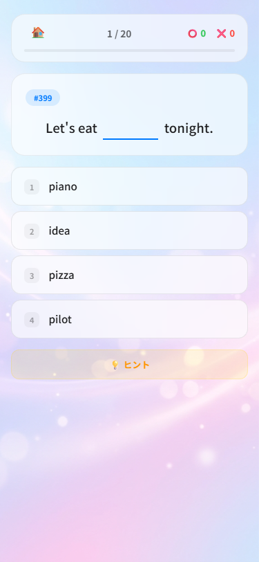
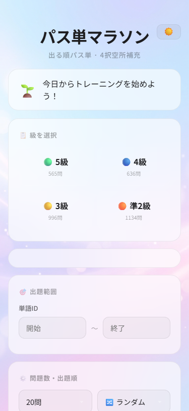

保護者の皆様へ
期間限定公開
次世代英語学習ツールのご案内
従来の暗記学習にサヨナラ
単なる「暗記」から、
「使える英語」へ。
Vocabraly Marathon （パス単マラソン）
英検®対策の学習方法が劇的に進化。
お子様の「継続」と「自学自習」を徹底的にサポートする、これまでにない全く新しい英単語アプリの誕生です。
お子様の「継続」と「自学自習」を徹底的にサポートする、これまでにない全く新しい英単語アプリの誕生です。
なぜ「結果に直結」するのか？
これまでにない 3つ の工夫点
📝
「生きた語彙」を育てる4択・空所補充
単なる「単語⇔日本語」の暗記ではなく、実際の英文の空所を埋める4択形式を採用。文脈の中で単語の正しい使い方やコロケーションを捉えるため、英検本番のリーディング問題に直結する実践的な語彙力が自然と身につきます。
🎧
目と耳で覚える「音声連動システム」
正解すると同時に、その英文のネイティブの音声が自動再生されます。単語を視覚的な文字からだけでなく、聴覚からの音声としても脳にインプットすることで、記憶への定着率を飛躍的に高め、リスニング力も同時に鍛えられます。
🔥
継続を生む「ミス自動復習」と「ストリーク」
間違えた問題はAIが自動で記録し、ピンポイントで復習可能。さらに毎日の学習で「連続トレーニング記録」が更新されます。ゲーム感覚で「途切れさせたくない！」という心理を刺激し、お子様の自立した学習習慣を確立します。

👆 実践的なクイズ画面

📊 成績・復習トップ画面
ReadPass Pro との連携で圧倒的シナジー！
効果が倍増
長文読解アプリ『ReadPass Pro』と併用することで、単語の「知識のインプット」と、長文読解での「実践的アウトプット」を往復。
単なる暗記が、試験で通用する「本物の読解力」へと確実に進化します。
単なる暗記が、試験で通用する「本物の読解力」へと確実に進化します。
知識
パス単マラソン
⇄
実践
ReadPass Pro
今すぐアクセス
して体験！
スマホのカメラで
読み取ってください
vocabraly-marathon...
※本アプリはECCベストワン所属生専用です。予告なく一般公開を停止する場合があります。